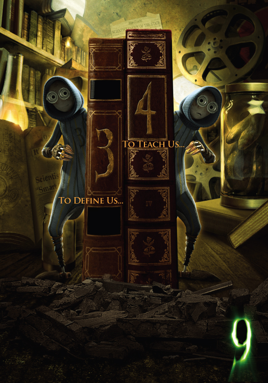
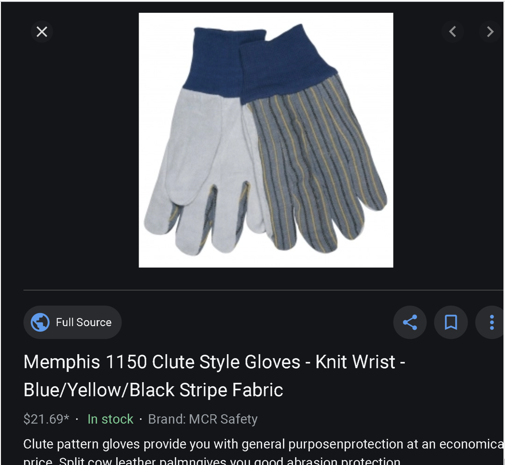

3 and 4 are very interesting characters. They are inquisitive, childlike, and innocent. The twins are nearly identical with only very subtle differences.
They are designed from a pair of garden gloves (no joke) and can be found scurrying around the abandoned library in search of clues.
Originally, they were meant to share two halves of a "talkbox" which when put together, allows them to speak. Sadly, this concept was abandoned and they are mute characters.
But they are still super cool! 3 and 4 communicate to each other by flashing their eyes. 4 is able to communicate via a projector to the others.
They don't add much to the plot, but hey, at least they're cute.

The twins meeting 9 for the first time.
Canon renders of one of the twins.

Like... check out these gloves! They look just like 3 and 4.